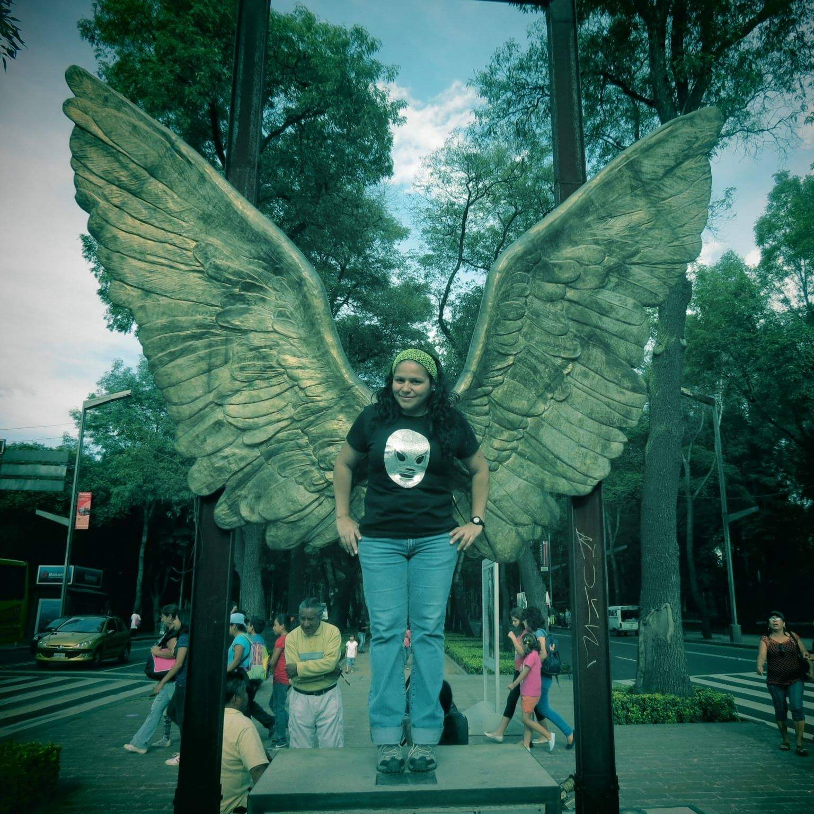

Soy antrop√≥loga social ü§ì, dedicada a la gesti√≥n de proyectos, con capacidad para pensar estrat√©gicamente, ejecutar con eficacia y entregar un trabajo de alta calidad. Fot√≥grafa y fil√≥sofa amateur, que le gustan las pel√≠culas de terror üëª y comer en un lindo lugar. Amante de los viajes üõ¨ repentinos, aprendiendo a comer sano y reconstruy√©ndome. Soy venezolana, tengo un buen sentido del humor üòâ. Y hasta hace muy poco pens√© que no sab√≠a que podr√≠a aprender algo de programaci√≥n üñ•Ô∏è. Mis objetivos son: Aportar conocimiento a los proyectos empresariales. Interactuar y establecer oportunidades de mejora y crecimiento para la empresa. Brindar asesor√≠a de manera responsable y altamente receptiva. Especialidades: Formaci√≥n de recursos humanos. Etn√≥grafa digital. Project Manager Digital.

Hola, te invito a conocerme
Conóceme
Skill
- Comunicación
- Compromiso
- Responsable
Hobbies
- Aprender cosas nuevas
- Ver películas de terror
- Hacer recetas